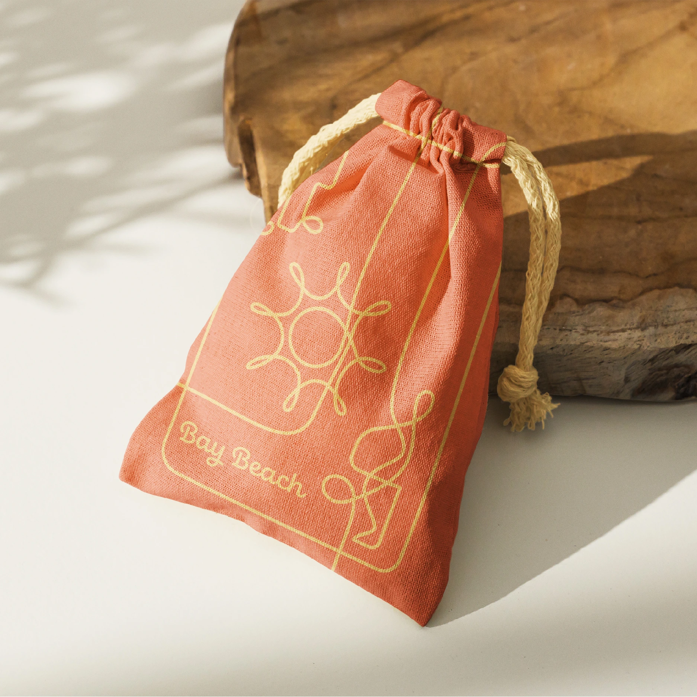
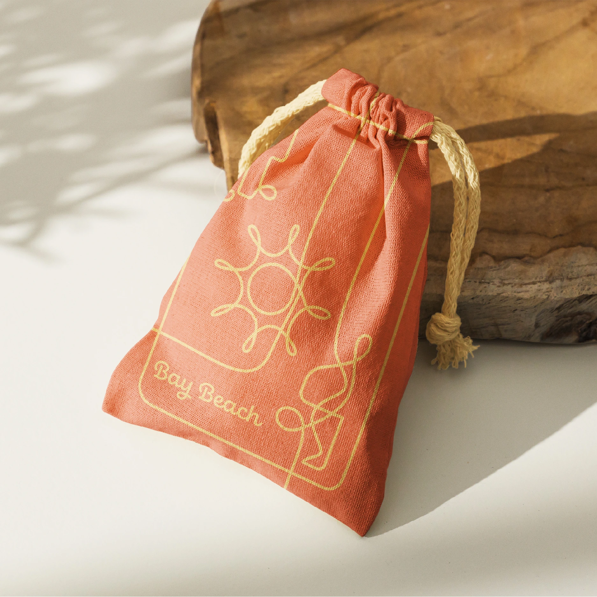

Bay Beach is an amusement park that has been open in Green Bay since 1892. The park is home to many rides such as the Sea Dragon, the Tilt-A-Whirl, and the old-fashioned train that rides around the park. Bay Beach prides itself on being the home of the Zippin Pippin, Elvis Presley's favorite ride. To enjoy the park, park-goers can purchase tickets to use at any of the rides for only 25¢ each.
This project takes a look at the core elements of Green Bay's Bay Beach Amusement Park in order to redesign its logo. This redesign combines the elements of excitement, rides, and nostalgia to create a pleasing and welcoming logo.

Expanding on the identity, I created a poster that would advertise the park with a nostalgic and approachable tone. The poster includes references to the theme park's roller coaster and old-fashioned train along with imagery of their paper ride tickets to draw a connection to the park's physical aspects. Additionally, the poster employs a dynamic composition and color palette to create a sense of excitement and wonder.
I began the identity's creation process by creating 5 key words to follow in my design development: nostalgic, exciting, community, rides, and summer.
I decided to demonstrate nostalgia by referencing the park’s tickets that have always stayed the same. I also wanted to reference the park's old-fashioned train. I did so by illustrating the train in a line drawing reminiscent of a roller coaster track. The coaster track references the park's most popular ride: the Zippin Pippin.